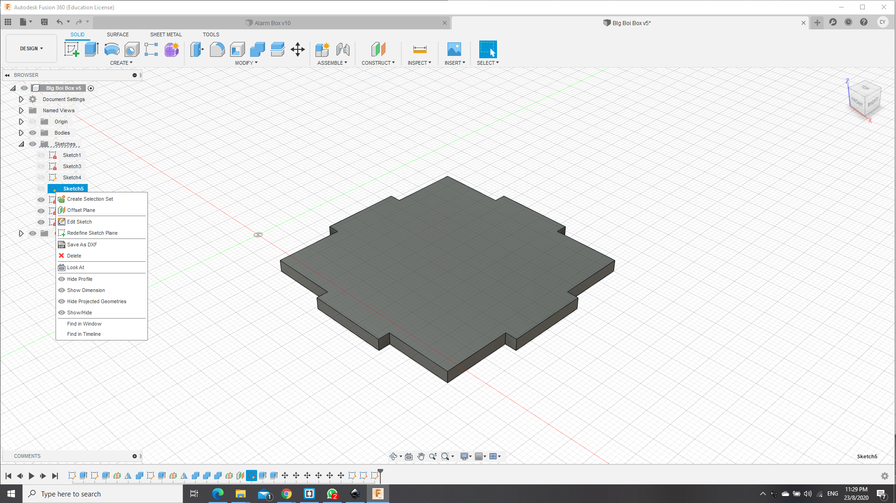

Home page
Computer Controlled Cutting
For Laser Cutting, due to the covid-19, we were unable to do much practice and tests with this. To start off, we had to take a certification quiz in SP. And afterwards, we used the Epilog Fusion M2 laser cutter to cut out our objects.

Firstly we had to import the files from Autodesk Fusion 360 in the form of dxf files and import them into coreldraw. To save the files individually, we have to first create a sketch on the face of the body in which you wish to cut and afterwards save these files as DXF files. After importing these files, we had edit the settings for the laser cut. For instances, there are 2 settings we had learnt when it came down to laser cutting, cutting and engraving. Using colour to determine the settings desired, whereby red is for cutting and green is for engraving. we also had to set the speed and the intensity of the laser during the cut. whereby a higher power cut, causes the laser to cut more material linearly, and the speed also affects how much material is cut as a slower cut causes the laser to burn more material as it travels along the path.
how to save as dxf file
Heres a video of how it looks like during laser cutting.
Link to video